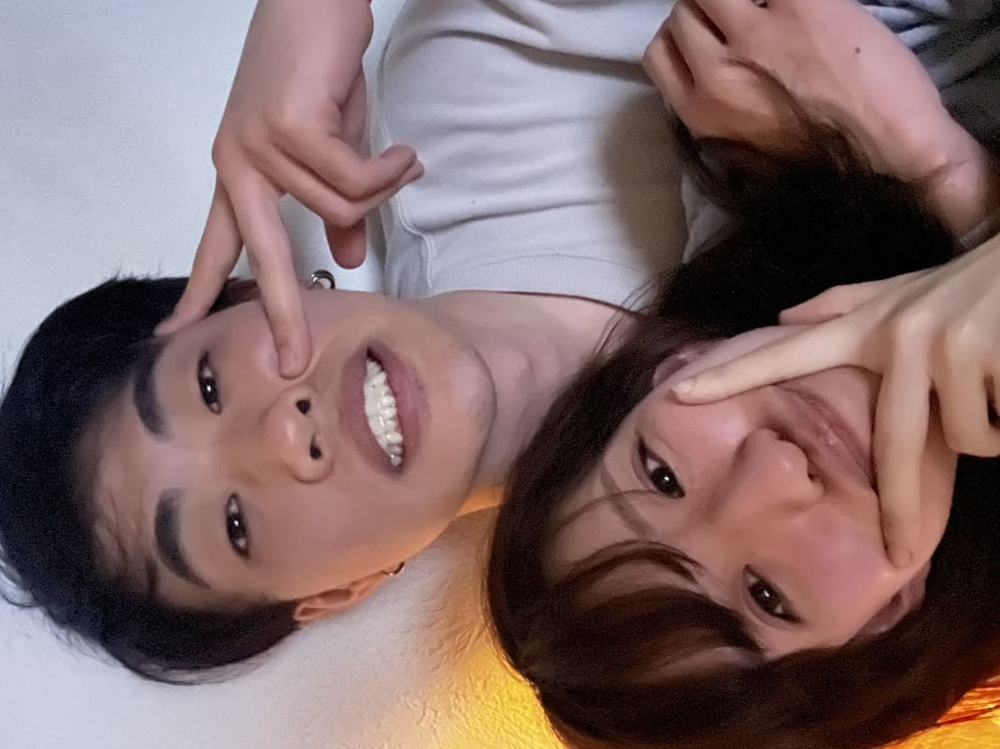

✕
Home
私たちについて
Memory
My Favorite
Q&A
私たちのこだわり
プレイリスト
プチギフトの紹介
プロフィールブックについて
座席表
メニュー
前撮り写真
写真シェア
Q&A
皆様にいただいた質問の中から
多かった質問、変な質問を
抜粋させていただきました！
惜しくも掲載されなかった方は
新郎がクレームを受け付けます(たぶん)
お互いの好きなところ(マニアック編)
疲れてるといつの間にか
ベッドに行って寝てるところ
(仰向けで口が開いているところが愛おしい)
忙しくて部屋の掃除が
何日かできなかったとしても
何も言わないし
もはや何も思ってないところ(ありがたい)
好きになったきっかけは？
一緒にいて楽しかった。
どんな時でも一緒に過ごしたいと思った時
串カツ田中でたこ焼き作ってる最中に
"赤いブルーノを同棲の時使うのが夢"
って話したら
"それ持ってるんで一緒に住みます？"
って言ってきた時
2人にとって結婚とは？
愛情の証明
一つの幸せの形
自分だけの人生から
2人で手を取り合う人生に変わること
2人で初めて撮った写真は？
これらしい↓

2人でよく行く好きな場所！
サンシャイン池袋
家から歩いて行けるし
なんでもあるから楽しい！
おすすめのスタバのカスタマイズは？
トリプルエスプレッソラテの
ホワイトモカ変更
ミルクは気分で、アーモンドミルク
エスプレッソアフォガードフラペチーノ
チョコレートチップ追加
好きなアンパンマンのキャラは誰ですか？
天丼マン！！
一番強いアンパンマン
お風呂での歯磨きはOK派ですか？
NG派ですか？
OKだけど、自分はしないと思う
字面だけ見るとOKなんだけど、
いざ目の前で毎日やられるのは嫌かも笑笑